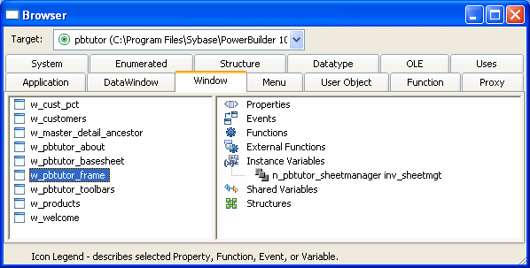

You can perform standard editing tasks in the Script view using the Edit menu, the pop-up menu in the Script view, or the PainterBars. There are shortcuts for many editing actions.
 Setting up shortcuts In a painter with a Script view, select Tools>Keyboard
Shortcuts. Expand the Edit menu to view existing shortcuts and set
up your own shortcuts.
Setting up shortcuts In a painter with a Script view, select Tools>Keyboard
Shortcuts. Expand the Edit menu to view existing shortcuts and set
up your own shortcuts.
There is an internal limit on the size of compiled Pcode on any script. Pcode is the interpreted language into which scripts are compiled. A script that exceeds this limit can be compiled successfully, but the error "Maximum script size exceeded" displays when you attempt to save the script. Note that the amount of Pcode generated from a given script is not directly proportional to the number of lines of code, so you might encounter this error in a script with 1200 lines of code, but not in a script with 1500 lines of code. To avoid receiving this error, move code to functions that you post or trigger in the event script.
You can print a description of the object you are editing, including all its scripts, by selecting File>Print from the menu bar. To print a specific script, select File>Print Script.
You can paste the names of variables, functions, objects, controls, and other items directly into your scripts. (You can also use AutoScript. See "Using AutoScript".) If what you paste includes commented text that you need to replace, such as function arguments or clauses in a statement, you can use Edit>Go To>Next Marker to move your cursor to the next commented item in the template.
 Undoing a paste If you paste information into your script by mistake, click
the Undo button or select Edit>Undo from the menu bar.
Undoing a paste If you paste information into your script by mistake, click
the Undo button or select Edit>Undo from the menu bar.
Some of these techniques are explained in the sections that follow.
To paste the name of a PowerBuilder object or of any of its properties, functions, or events, select the item you want to paste on the Workspace tab of the System Tree and drag it into your script.
You can use the Browser to paste the name of any property, data type, function, structure, variable, or object in the application.
Most tab pages in the Browser have two panes:

The left pane displays a single type of object, such as a window or menu. The right pane displays the properties, events, functions, external functions, instance variables, shared variables, and structures associated with the object.
 Getting context-sensitive Help in the Browser To get context-sensitive Help for an object, control, or function,
select Help from its pop-up menu.
Getting context-sensitive Help in the Browser To get context-sensitive Help for an object, control, or function,
select Help from its pop-up menu.
 To use the Browser to paste information into the
Script view:
To use the Browser to paste information into the
Script view:
Click the Browser button in the PowerBar, or select Tools>Browser.
Select the PowerScript target you want to browse.
Select the appropriate tab and then select the object in the left pane.
Select the category of information you want to display by expanding the appropriate folder in the right pane.
Select the information and click Copy.
In the Script view, move the cursor where you want to paste the information and select any text you want to replace with the pasting.
Select Paste from the pop-up menu.
PowerBuilder displays the information at the insertion point in the script, replacing any selected text.
For information about using the Browser to paste OLE object information into a script, see Application Techniques .
You can paste a template for all basic forms of the following PowerScript statements:
When you paste these statements into a script, prototype values display in the syntax to indicate conditions or actions. By default, the statements are pasted in lowercase. To paste statements in uppercase, add the following line to the [PB] section of the PB.INI file:
PasteLowercase=0
 To paste a PowerScript statement into the script:
To paste a PowerScript statement into the script:
Place the insertion point where you want to paste the statement in the script.
Select the Paste Statement button from the PainterBar, or select Edit>Paste Special>Statement from the menu bar.
Select the statement you want to paste from the cascading menu.
The statement prototype displays at the insertion point in the script.
Replace the prototype values with the conditions you want to test and the actions you want to take based on the test results.
For more about PowerScript statements, see the PowerScript Reference .
You can paste a SQL statement into your script instead of typing the statement.
 To paste a SQL statement:
To paste a SQL statement:
Place the insertion point where you want to paste the SQL statement in the script.
Click the Paste SQL button in the PainterBar, or select Edit>Paste Special>SQL from the menu bar.
Select the type of statement you want to insert from the cascading menu by double-clicking the appropriate button.
The appropriate dialog box displays so that you can create the SQL statement.
Create the statement, then return to the Script view.
The statement displays at the insertion point in the workspace.
For more about embedding SQL in scripts, see the PowerScript Reference .
You can paste any function into a script.
 To paste a function into a script:
To paste a function into a script:
Place the insertion point where you want to paste the function in the script.
Click the Paste Function button in the PainterBar,
or select
Edit>Paste Special>Function
from the menu bar.
Choose the type of function you want to paste: built-in, user-defined, or external.
Double-click the function you want from the list that displays.
PowerBuilder pastes the function into the script and places the cursor within the parentheses so that you can define any needed arguments.
For more about pasting user-defined functions, see "Pasting user-defined functions". For more about external and built-in functions, see Application Techniques .
If you have code that is common across different scripts, you can keep that code in a text file, then paste it into new scripts you write. For shorter snippets of code, you can also use the Clip window. See "The Clip window".
 To import the contents of a file into the Script
view:
To import the contents of a file into the Script
view:
Place the insertion point where you want the file contents pasted.
Select Edit>Paste Special>From File from the menu bar.
The Paste From File dialog box displays, listing all files with the extension SCR. If necessary, navigate to the directory that contains the script you want to paste.
Choose the file containing the code you want. You can change the type of files displayed by changing the file specification in the File Name box.
PowerBuilder copies the file into the Script view at the insertion point.
 Saving a script to a file To save all or part of a script to an external text file,
select the code you want to save and copy and paste it to the file
editor. Use the extension .SCR to identify
it as PowerScript code. You might want to use this technique to
save a backup copy before you make major changes or so that you
can use the code in other scripts.
Saving a script to a file To save all or part of a script to an external text file,
select the code you want to save and copy and paste it to the file
editor. Use the extension .SCR to identify
it as PowerScript code. You might want to use this technique to
save a backup copy before you make major changes or so that you
can use the code in other scripts.
You can discard the edits you have made to a script and revert to the unedited version by selecting Edit>Revert Script from the menu.